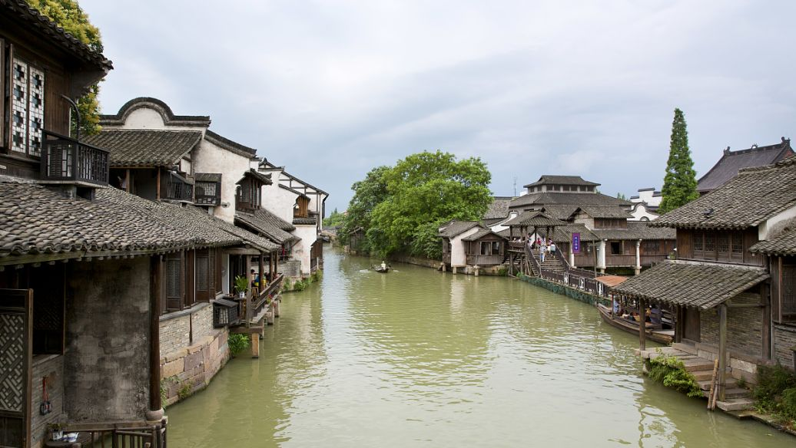
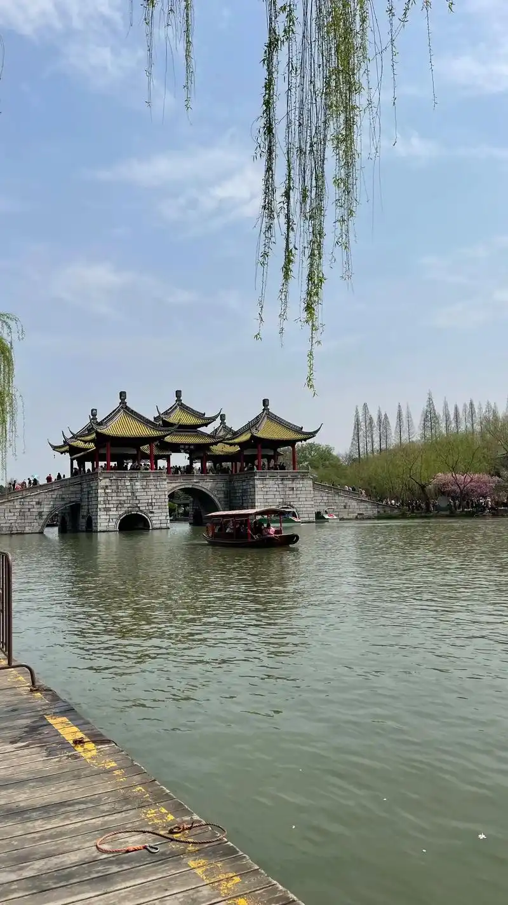
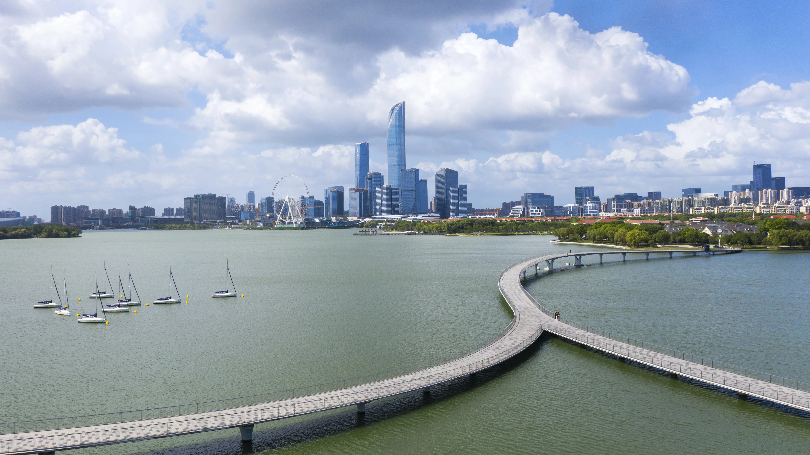

乌镇 - 浙江桐乡

乌镇是江南六大古镇之一，有着1300多年的历史。镇内水道纵横，桥梁众多，保存着完整的明清建筑群。
- 江南建筑典范
- 水乡文化代表
- 千年商贸重镇
探索大运河沿线最具代表性的历史古镇

乌镇是江南六大古镇之一，有着1300多年的历史。镇内水道纵横，桥梁众多，保存着完整的明清建筑群。
台儿庄是大运河上的重要码头，素有"天下第一庄"之称。古城内保存着完整的运河文化遗存。

扬州是大运河畔最繁华的城市之一，以其园林、美食和文化艺术闻名于世。

因张继《枫桥夜泊》诗而闻名，是大运河上重要的文化地标，见证了运河的繁华历史。